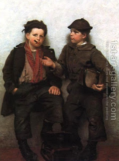

Bava Metzia 36 - Custodian Finds another Custodian in his Stead
If a custodian transferred a deposit to another custodian without obtaining permission from the owner, then Rav says that it is NOT an act of negligence, and the the first custodian doesn't' acquire any additional liability for losses, since he still guarantees the deposit.
Rabbi Yochanan says that it IS an act of negligence, and that the first custodian is now liable even for unavoidable accidents, for which he was not liable before, because the owner can say to the first custodian, "You are credible to me with an oath, and that second custodian is not."
The final law agrees with Rabbi Yochanan.
Test your knowledge of the daf